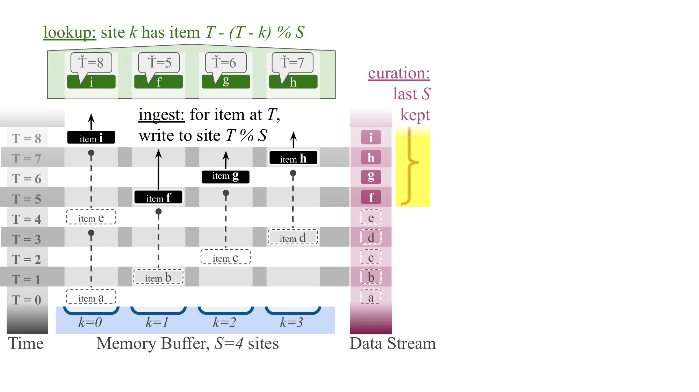
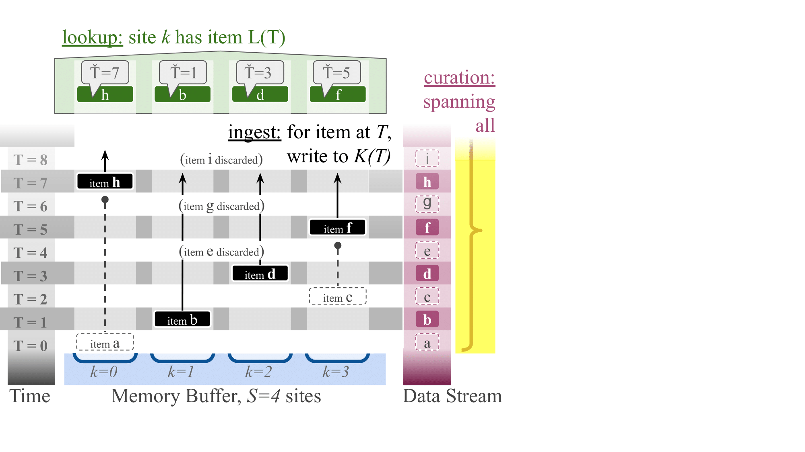

Quickstart
Ring Buffer Generalization Intuition
Data streams consist of a strictly ordered sequence of read once inputs. They often exceed available memory capacity.
Traditional approaches like circular ring buffers keep only the most recent data points. They discard older information.

In contrast, downstream maintains representative records of stream history using three algorithms. The steady algorithm creates evenly spaced snapshots across the entire history. The stretched algorithm preserves important older data points. The tilted algorithm prioritizes recent information.  We provide a more detailed description of available algorithms in Selecting a downstream Algorithm. That page offers guidance on picking one for your use case.
Installing
To install from PyPi with pip, run
Or optionally, to install with JIT
A containerized release of downstream is available via https://ghcr.io.
downstream is also available in C++, Rust, Zig, and CSL.
Installation instructions are available on each of their respective pages.
Container Interface
The Python downstream library provides an object-oriented interface for managing downstream data.
from downstream.dsurf import Surface
from downstream.dstream import steady_algo
S = 8 # Buffer size, must be a power of 2
surface = Surface(steady_algo, S)
assert surface.T == 0
assert [*surface] == [None] * surface.S
assert [*surface.lookup()] == [None] * surface.S
for T in range(100):
site = surface.ingest_one(T)
if site is not None:
assert surface[site] == T
assert [*surface] == [*surface.lookup()]
print([*surface.lookup_zip_items()])
Buffer Interface
For other languages or lower-level use cases, the downstream library provides a direct buffer interface, where responsbility for data storage is delegated to the user.
-
Site assignment maps data item index
Tto a storage location using either:assign_storage_site: For processing single data pointsassign_storage_site_batched: For efficient bulk processing of multiple data points
from downstream import dstream
# Initialize a buffer with size 8 (must be a power of 2)
S = 8
# Process a stream of data items
for T in range(20):
# Determine site based on buffer size and index T
site = dstream.steady_algo.assign_storage_site(S, T)
if site is not None:
# Store data at the selected site
print(f"Data point {T} stored at position {site}")
For high-level interfaces, a null value (e.g., None in Python) indicates that the data item should be discarded.
For low-level interfaces, a site index of S indicates that the data item should be discarded.
For hstrat users: to update a genome annotation, you can store a random differentia or make a random choice whether to toggle single-bit differentia with each generation elapsed.
Lookup
The Python implementation provides lookup_ingest_times to recover the stream index of values stored in a buffer.
For high throughput workloads, use lookup_ingest_times_batched which applies NumPy vectorization and Numba parallelization for speed.
Most workflows serialize buffer contents and run lookups in bulk rather than online, as described next.
DataFrame-based Postprocessing
After processing a stream, you can serialize the buffer contents into a tabular data file format like CSV or Parquet.
To run a lookup on serialized data, you can use the downstream.dataframe.explode_lookup_packed_uint command.
input.csv:
dstream_algo,downstream_version,data_hex,dstream_storage_bitoffset,dstream_storage_bitwidth,dstream_T_bitoffset,dstream_T_bitwidth,dstream_S
dstream.steady_algo,1.0.1,080001030702050406,8,64,0,8,8
dstream.steady_algo,1.0.1,0b0001030702050906,8,64,0,8,8
output.csv
dstream_data_id,dstream_T,dstream_value_bitwidth,dstream_value,dstream_Tbar
0,8,8,0,0
0,8,8,1,1
0,8,8,3,3
0,8,8,7,7
0,8,8,2,2
0,8,8,5,5
0,8,8,4,4
0,8,8,6,6
1,11,8,0,0
1,11,8,1,1
1,11,8,3,3
1,11,8,7,7
1,11,8,2,2
1,11,8,5,5
1,11,8,9,9
1,11,8,6,6
A library-based Python API for DataFrame operations is also provided, described here. Full information on DataFrame column conventions is provided in docstrings for corresponding library functions.
A reference implementation of hex serialization can be found in source code for dsurf.Surface.to_hex.